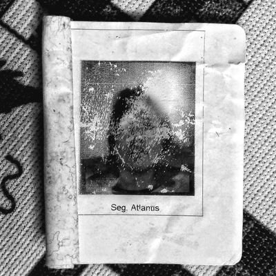

analysis of victimizing events in the departments of antioquia and chocó during the period covered by the colombian special jurisdiction for peace (1986 – 2016), exploring correlations between governments, armed actors and impacts on the civilian population.
interpretation of dane census data over the last two decades to understand internal migration and social mobility within colombian territory.
full-stack task manager built at i.c stars: an express backend connected to a sql database with a react frontend, allowing users to create and manage their own task lists end-to-end.
backend foundation with a sql crud (create, read, update, delete) interface — first step toward a professional software developer profile.
virtual museum that pairs each of my i.c stars cohort colleagues with an artwork from the art institute of chicago — a leadership exercise turned into a living archive.
a small react + javascript app that takes the apparent simplicity of "doing a sum" and exposes the surprising programming complexity behind it.
interactive number-guessing game that helped me explore javascript, typography and color as essential pieces of a working web page.
my first follow-along with the official react tutorial — a small implementation of tic-tac-toe to internalise component thinking and state.
postgraduate studies in photography, universidad nacional de colombia · 2016.
personal archive in progress. essays on territory, memory and everyday life in bogotá and the colombian pacific coast.
— soon
political scientist with postgraduate studies in economics and photography. trained in information gathering, investigative reporting, accompaniment of community processes, curatorial work and public-policy analysis.
11+ years working at the intersection of data and public policy with the public sector, international organisations and ngos in colombia, with a recent stint as data analyst intern at i.c stars (chicago).
python · sql · r · stata · power bi · tableau · looker studio · arcgis · qgis · power apps · power automate · sharepoint · react · javascript · express · node.js · html · css